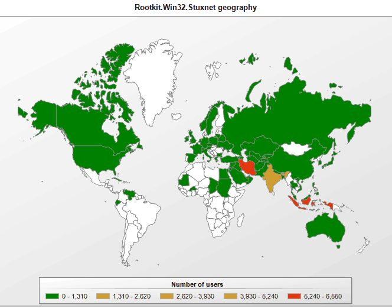
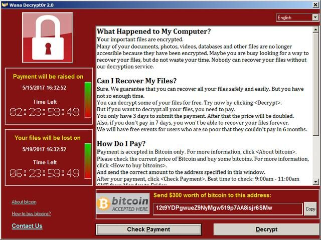
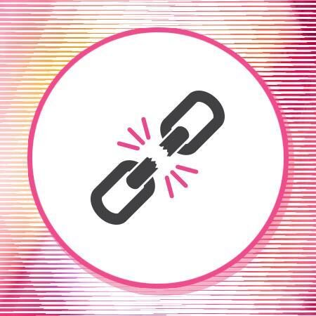
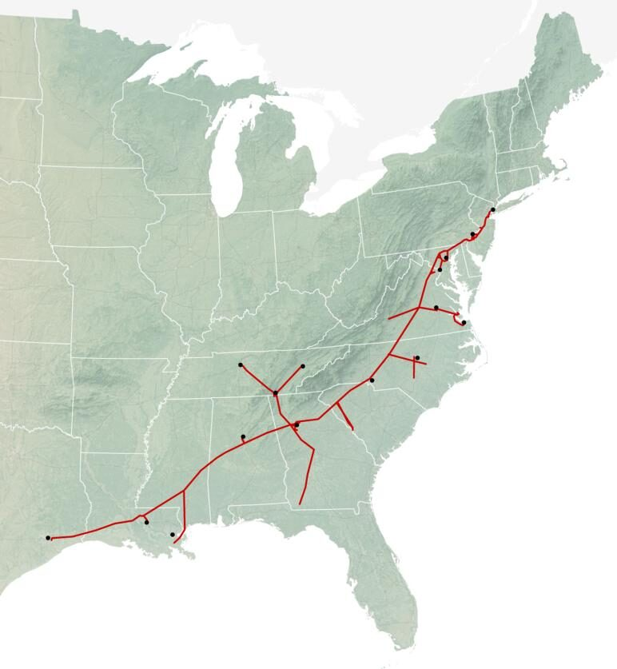

Evolución de las amenazas y estado actual
La historia del malware es también la historia de cómo cambió su motivación: de la curiosidad académica de los años 70 al negocio criminal organizado de hoy. Este módulo recorre esa línea temporal y se detiene en cinco casos que marcaron un punto de inflexión.
1 Línea temporal
Pre-1980 · Los orígenes teóricos
1949 John von Neumann publica "Theory and Organization of Complicated Automata", donde plantea por primera vez la posibilidad de crear programas capaces de autorreplicarse y tomar el control de otros programas.
1971 Bob Thomas crea Creeper ("enredadera"), considerado el primer precursor del malware actual: un software experimental para sistemas TENEX que comprobaba la teoría de autorreplicación de von Neumann. Se copiaba remotamente a través de ARPANET y mostraba el mensaje "I'M THE CREEPER: CATCH ME IF YOU CAN!".
1972 Ray Tomlinson crea Reaper ("segadora"), diseñado para eliminar a Creeper del sistema y considerado el primer antimalware de la historia.
1975 John Walker desarrolla lo que se considera el primer troyano de la historia: Animal/Pervade, un juego de preguntas (Animal) que incluía una rutina (Pervade) que creaba copias del programa en los directorios del usuario.
1980-1990 · El salto a la propagación real
1982 Elk Cloner se considera el primer malware conocido que fue más allá de una prueba de concepto y tuvo una expansión real. Lo desarrolló el estudiante de bachillerato Rich Skrenta para sistemas Apple II, aprovechando una vulnerabilidad en el disco floppy.
1987 El virus Jerusalem, de la familia Suriv, implementaba una bomba lógica que se activaba en fechas específicas; en el caso de Jerusalén, cada viernes 13, lo que le hizo ser mundialmente conocido como Virus Viernes 13.
1988 Morris Worm (Gusano Morris), creado como prueba de concepto por Robert Tappan Morris, se considera el primer gusano en replicarse a través de Internet, infectando computadoras VAX de DEC y sistemas UNIX de Sun Microsystems.
1989 Joseph Popp desarrolla AIDS Trojan, que tras 90 inicios del sistema cifraba todos los nombres de los archivos en la unidad C:, inutilizando el sistema y solicitando un rescate para su recuperación. Se considera el primer ransomware de la historia.
1990-2000 · Polimorfismo, macros y los primeros RAT
1990 Mark Washburn crea 1260/V2PX, el primer malware polimórfico, capaz de mutar su código manteniendo su funcionalidad cada vez que se replica, dificultando así su detección.
1995 Se detecta Concept, considerado el primer malware de macro, que se propagaba a través de documentos infectados de Word 95 y Word 6.0.
1998 CIH/Chernobyl, para sistemas Windows 9x, uno de los malware más dañinos de la época: eliminaba información del usuario y podía llegar a sobrescribir la BIOS.
1998 Se desarrollan Back Orifice y Netbus, dos pruebas de concepto para la administración remota de sistemas Microsoft Windows que sientan las bases de los futuros RAT.
1999 Surge Kak Worm, considerado el primer malware escrito en JavaScript, que utilizaba una vulnerabilidad en Outlook Express para propagarse.
2000-2005 · Escala masiva y primeras botnets
2000 Gusano ILOVEYOU/LoveLetter, escrito en VBScript, se estima que infectó a más de 50 millones de dispositivos. Llegó a atacar al Pentágono, la CIA y el Parlamento Británico, y su impacto económico superó los 5.000 millones de dólares.
2001 Code Red, considerado el primer malware fileless, explotaba una vulnerabilidad en los servidores web de Microsoft IIS, permaneciendo únicamente en la memoria del host.
2002 Nacen los primeros malware empaquetados, como Frethem o Bugbear/Tanatos, lo cual dificultaba su detección por el software antimalware de la época.
2003 Se descubren los primeros gusanos utilizados para crear botnets o redes zombis, como Agobot, RBot o, más tarde, Mydoom.
2004 El gusano Sasser afecta a grandes compañías y organizaciones, como la agencia de noticias Agence France-Presse y la compañía aérea Delta Air Lines.
2005-2010 · El malware se convierte en negocio
La creación de malware deja de ser un mero entretenimiento y comienza a convertirse en un negocio lucrativo que cada vez atrae a más ciberdelincuentes.
En esta época nacen los primeros troyanos bancarios, como Zbot/Zeus, Gozi, Caberp o Spyeye, y comienza a generalizarse la utilización del phishing y otras modalidades de ingeniería social.
La popularización de juegos online como SecondLife o World of Warcraft, así como el auge de redes sociales como Myspace, Facebook y Twitter, abren nuevos campos de acción para los creadores de malware.
La proliferación de dispositivos que se conectan a través del puerto USB se convierte también en un importante vector de infección.
Los usuarios comienzan a tomar conciencia de la necesidad de protegerse del malware, lo que da lugar a la aparición de los primeros rogueware.
2010-Actualidad · Cibercrimen organizado y ciberguerra
Se confirma la evolución del malware hacia la ciberdelincuencia y entra en escena el crimen organizado, que busca el mayor beneficio económico, erigiendo al ransomware como una de las opciones favoritas para conseguir sus objetivos.
Destaca también en esta época la proliferación de ataques dirigidos, ataques contra infraestructuras críticas y la proliferación de actores patrocinados por gobiernos, que establecen equipos de desarrollo de malware como un arma más en la guerra tecnológica para desestabilizar organizaciones y estados.
2 Cinco casos que marcaron un punto de inflexión
Los cinco casos siguientes ilustran, con ejemplos concretos, las tendencias descritas en la última etapa de la línea temporal: sabotaje patrocinado por estados, ransomware como servicio y ataques a la cadena de suministro.

2010Stuxnet
Stuxnet es un sofisticado malware descubierto en 2010, diseñado específicamente para atacar sistemas de control industrial SCADA utilizados en infraestructuras críticas. Aunque su origen no fue revelado oficialmente, diversos indicios sugieren que fue desarrollado por las agencias de inteligencia estadounidense e israelí con el objetivo de sabotear el programa nuclear de Irán. Se propagó a través de unidades USB y, una vez en el sistema, buscaba los controladores de las centrifugadoras utilizadas en el proceso de enriquecimiento de uranio, a las que causaba daños físicos haciéndolas funcionar fuera de sus especificaciones normales.
2012Reveton
Reveton está considerado el primer caso de Ransomware-as-a-Service (RaaS): un modelo de negocio en el que el proveedor de ransomware desarrolla una plataforma maliciosa que pone al servicio de sus afiliados, quienes no necesitan tener habilidades técnicas propias para explotar a sus víctimas. Este modelo ha alcanzado una gran popularidad en la actualidad con actores como LockBit, responsable de más de un tercio de los ataques de ransomware realizados en 2022.

2017WannaCry
El 12 de mayo de 2017 el malware WannaCrypt0r 2.0, más conocido como WannaCry, protagoniza un ataque de ransomware a escala mundial que en tan solo unas horas logró infectar a más de 140.000 dispositivos. El malware utilizaba el exploit EternalBlue, desarrollado secretamente por la NSA, que aprovechaba una vulnerabilidad del protocolo SMB de Microsoft y que había sido filtrado por el grupo de hackers The Shadow Brokers aproximadamente un mes antes.

2020Ataque a SolarWinds
En diciembre de 2020 ocurrió un sofisticado ataque a gran escala que afectó a numerosas organizaciones, incluidas varias agencias gubernamentales de EE. UU., como el Departamento del Tesoro, la Administración Nacional de Telecomunicaciones o el Departamento de Seguridad Nacional. El ataque fue llevado a cabo mediante el malware Sunburst, y se ha convertido en un ejemplo paradigmático de ataque a la cadena de suministro, pues tuvo su origen en el software de SolarWinds Corporation, una compañía estadounidense que desarrolla software de gestión de TI utilizado por casi todas las empresas Fortune 500 y numerosas agencias gubernamentales de todo el mundo.

2021Ataque a Colonial Pipeline
Colonial Pipeline es la empresa que controla la principal red de oleoductos de la costa este de EE. UU. El ataque fue desplegado el 7 de mayo de 2021 y obligó a desactivar parte de los sistemas de información de la empresa, lo cual provocó retrasos en el suministro y subidas de precio del combustible. El ataque fue llevado a cabo con un RaaS conocido como DarkSide.